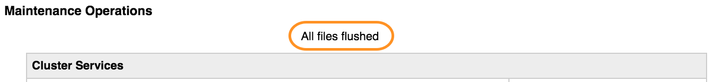

Administration > System Maintenance
The System Maintenance page includes controls for restarting or shutting down elements of the cluster, and other maintenance and troubleshooting utilities.
Caution
This page includes controls that can cause data loss, disrupt client access, and erase cluster configurations entirely. Be cautious when using these controls. Consult Avere Global Services to for guidance before using the tools provided on this page.

A message at the top of the page shows how many files in the cluster cache have not yet been written (flushed) to the core filer. To avoid potential data loss, do not perform any operations on the page until the message reads “All files flushed.”
{kind=link}
Cluster Services Operations
The checkbox at the top of the Cluster Services section lets you use the cluster’s high availability feature to avoid service disruption with the actions in this section. If checked, the system coordinates restarts to avoid putting a node and its HA partner out of service at the same time.
If high availability is not enabled on your cluster, the option is unavailable.
Options in this section have to do with rebooting or restarting facilities in the cluster.
- Restart cluster
Restarts services on every node in the cluster.
Restarting cluster services is generally a safe operation. It temporarily disrupts client access but does not affect client data.
- Reboot cluster
Restart every node in the cluster.
Restarting the cluster is generally a safe operation. It temporarily disrupts client access but does not affect client data.
- Reboot alternate
This option restarts the cluster nodes but switches the Avere OS software to the version in the alternate boot image. Read Administration > Software Update to learn more about the alternate software image.
During this process, the primary node restarts all of the other cluster nodes in parallel, then restarts itself. The primary node is listed at the bottom of this page with the phrase Currently connected to.
Restarting the cluster with the alternate image is generally a safe operation.
- Power down cluster
Shuts down all nodes in the cluster. When a cluster is powered down, data in the cache is saved to storage media on the FXT nodes, but is not always written to the core filer.
Powering down the cluster is generally a safe operation.
- Rebalance directory managers
Directory managers are cluster processes that track file metadata. Avere OS attempts to distribute the cluster’s directory managers evenly across the cluster nodes, but if nodes are added to the cluster a rebalance typically is needed.
Note
On some systems, rebalancing can take several minutes and can interrupt client traffic. If possible, start the rebalance during a low traffic time.
This button is active only when the system detects that a node in the cluster has no directory managers.
- Clear all conditions
- This control removes all Conditions notifications. This control does not dismiss Alerts.
Client Access Operations
- Suspend access
This button causes the cluster’s vservers to stop accepting client requests. Requests to the cluster are ignored; no response is returned to the client.
Suspending access is necessary before invalidating a cache, destroying the Avere OS cluster, or erasing disks on the cluster nodes.
- Unsuspend access
- Re-enables client access to a suspended cluster.
Data Operations
Caution
Most of the options in this section make significant, permanent changes to the cluster.
Do not use these controls without consulting Avere Global Services for advice and assistance.
These operations can be performed only on a suspended cluster. The buttons in this section are inactive if the cluster is serving client requests. Use the Suspend access button in the client access section of this page to stop client access.
- Invalidate cache
Clicking this button immediately discards all cached data in the cluster.
For a cache that includes client writes, this operation is unsafe unless you are certain that all changed data has been written to the core filers. Invalidated data cannot be recovered from the cluster after this operation.
- Reconfigure
The Reconfigure with current and Reconfigure with modification buttons destroy the cluster and immediately create a new cluster with the primary cluster node only. Secondary cluster nodes are reset to an unjoined state.
Important
Modifying the configuration with these controls has the following effects:
- All secondary nodes are removed from the cluster. Only the primary node (listed at the bottom of the System Maintenance page) remains after the restart.
- Nodes might be renamed.
- All cached data is discarded. Client writes will be lost if they have not already been flushed to the core filers before this operation.
- HA and SMB settings for the cluster are discarded, even if you use the Reconfigure with current option.
There is no way to retrieve the previous configuration or cache data after this operation.
Contact Avere Global Services to learn more about using these controls.
- Reboot cluster/Power down cluster
The reboot and power down buttons in the Data section destroy the cluster and reset the FXT nodes to factory condition.
Warning
These options erase the cluster completely. All configuration information and cached data is permanently removed, and all FXT nodes are left in an unclustered state.
The bottom set of reboot and power down buttons also causes the system to overwrite all data on the FXT nodes’ data disks with zeroes to ensuring that no data can be retrieved from the disks.
Note
Zeroing an FXT node’s data disks takes several hours. Allow the operation to run until the Avere Control Panel becomes unavailable. There is no progress indicator for this operation.
Note
Deleting a cluster does not destroy the cluster’s Active Directory machine trust account (used for SMB access). You can delete the account manually on the AD server.